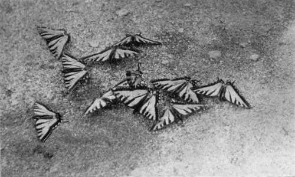

Chapter V. Reindeer Lake And Fort Du Brochet
Description
This section is from the book "Wild Life In Canada", by Angus Buchanan. Also available from Amazon: Wild Life in Canada.
Chapter V. Reindeer Lake And Fort Du Brochet
Reindeer Lake! Fort Du Brochet! Names remote on the map of Canada, names situated in that Far Northern hinderland where so few have come into being that each denominates a kingdom of virgin country which lies, unknown to our race, on all sides of the point that has been discovered. To me such names are big with possibilities, big with the attraction of things mysterious, big because they shelter a country that is waiting the races of the future. Yet to you, no doubt they are mere names of Lake and Post to be glanced over and forgotten, and given back to the gigantic soundless wastes of semi-Arctic Canada. Because they are hidden away in far-off distance they hold what fame they have in the still unravelled clouds, and the secretive silence, of the ever-passing years.
Reindeer Lake is between longitudes 102° and 103° and extends north to latitude 58°. It is a vast sheet of water which stretches 140 miles north and south, and forty miles across where its width is greatest. It is in a country of rock, and muskeg and low-lying hills which are filled with silence and unseen creatures.
The lake contains countless islands (some thousands) which are wooded, as are the land shores, with the strong character of dark-peaked Spruce and Scrub Pine, and a few Tamarac and Birch. The island shores, which are bordered with Willows at the fringes of the forest, are rugged and grey with rock and boulders, brightly relieved for occasional stretches with long low bays and points of spotless, warm-toned sand. Distant stretches of water open up between the islands, low smoke-blue hills show faintly in the distance, miniature traceries of dark trees rise, like masted ship, out of reflecting shadows on the far lake surface where hidden islands lie, and right out, as if at the end of the world, the waters die away into the clouds where no land is in sight. It is a wonderful lake of hidden distances which appear and disappear in all directions behind the foreland, as onward you travel through a truly bewitching fairyland. And over the clear blue waters of the lake, reaching far into the great distances, reaching even beyond into unseen but imaginable places, there reigns impressively the weight and solemnity of an unseen Spirit. It is the Spirit of the North-silent grandeur, and vastness, and untouched purity of a Virgin Land lending awe and greatness to Creation. It is the dominance of that Spirit which makes man feel, when in the great grave presence of it, how impotent, how insignificant a part of the Universe he is, and how humble he should be.
There are two Trading Posts on Reindeer Lake : one, a winter post, is on Big Island at the south end at the head of Reindeer River; the other, Fort Du Brochet, the chief Post of the territory, is on the north mainland near the mouth of the Cochrane River. The two Posts are, depending on wind, five to six days' canoe journey apart, while the York Boat of the Hudson Bay Company -a cumbersome, wide-beamed sailing craft of some forty-foot keel-with following wind (and the Indian crew always wait for such a wind when about to make the voyage), and travelling day and night, can accomplish the distance in two days.
It was in mid-July that Joe and I in our solitary canoe approached the north end of Reindeer Lake and sought the inlet which would hold some sign of habitation.
Night was creeping down over the earth, and the shores were darkening to blackness when our journey on the lake drew to a close and we neared the Post of Fort Du Brochet. The gladness of a summer's day was folding its spirit in repose, and the inflexions of a score of tiny nature sounds were fading away into the darkness, though still the strained ear caught the laughing trickle of water against the canoe and the low-speaking lap of the gentle waves as they came and went with the lazy northern breeze. Our approach was unheralded, and the lone canoe stole softly inshore, where cabins stood solemnly silhouetted against the wistful sky. Dim figures moved on shore to the left, and low voices, in native conversation, rose-then died away. Stars peeped out, and the Northern Lights grew clear in the overhead sky. A rising fish splashed-and another. . . . Then silence reigned.
The canoe was run in on the sand close by the shadowy landing, and my companion and I stepped ashore to pick our way up the rough path to the Fort. Night settled down to death-like silence. . . . The Spirit of the North was in the air, and in the solitude of the lonely Post.
Butterflies On Moist Shore Sand Of Reindeer Lake
The Landing At Fort Du Brochet
After rounding an island promontory Fort Du Brochet is approached, where its scanty settlement of miniature dwellings stands grave and grey in one of those hidden inlet bays so common to all waterways of the rugged North. The small gathering of teepees and cabins shows suddenly and at close range before the vision of the voya-geur, and he welcomes them, after his long, hard journey through unpeopled country, as an unexpected find. He exclaims with pleasure at the sight of habitations, and excitedly anticipates the joy of conversation with the white or halfbreed trader at the Fort. It is the way of men on the outer trails to be delighted with such rare meetings with mankind, for as they gain the freedom of the wilderness the mind looks ever back to its harvest of memories of companionship, and looking back grows ever hungrier for the voices of their kind. Those primitive shelters, artless and somewhat uncompromising in line and colour, are therefore as welcome to the traveller as at other times might be the comfortable bungalow of a civilised home. Indeed, it is possible they are more welcome, for in the Silent Places men learn a greater appreciation than in a world of ease.
Continue to:
- prev: On The Great Churchill River. Part 11
- Table of Contents
- next: Reindeer Lake And Fort Du Brochet. Continued